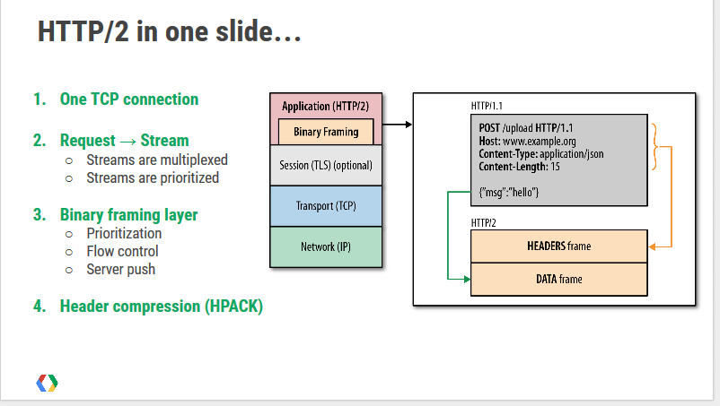

class: center, middle # HTTP/2 Drew Kalina --- # Motivation and Goals Decrease latency to improve load times 1. Improve latency (specifically perceived user latency) 2. Minimize protocol overhead (compression) 3. Eliminate "Head of line blocking" 4. Request prioritization and Server Push 5. Use One TCP Connection 6. Maintain semantics of HTTP/1.1 --- # In One Slide Credit: Ilya Grigorik’s <a href="https://docs.google.com/presentation/d/1r7QXGYOLCh4fcUq0jDdDwKJWNqWK1o4xMtYpKZCJYjM/present?slide=id.p19">presentation</a>: HTTP/2 is here, let’s optimize! Or, why (some) yesterday’s best-practices are today’s HTTP/2 anti-patterns. --- # One TCP Connection Connections are expensive * handshake latency * resource overhead * can make TCP flow control more noticeable --- # Multiplexing Multiple requests can be sent on the same TCP connection * Can be received out of order eliminating "head of line blocking". * Makes some performance strategies such as domain sharding and request inlining couterproductive. --- # Header Compression * Header size is greatly reduced * Some headers are fairly large. Cookies for example. --- # Request prioritization Multiple requests can be sent on the same TCP connection * Can be received out of order eliminating "head of line blocking". * Makes some performance strategies such as domain sharding and request inlining counterproductive. --- # Stream Dependencies Client can specify which resources are more important Servers don't have to honor it though. --- # Server Push The server can send other assets based off a request BEFORE the client requests them. * Push other items for a web page (images, etc.) * Doesn't replace websockets but is complementary. --- # Questions?